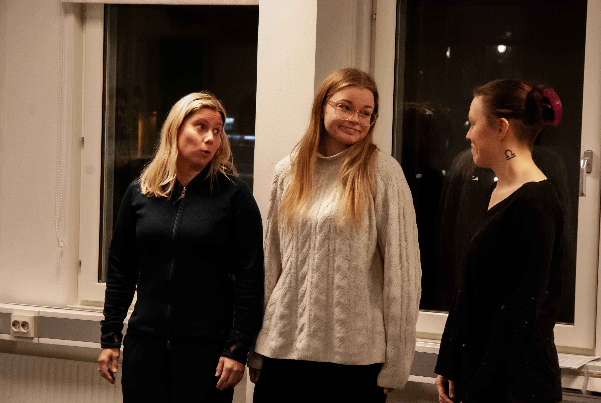
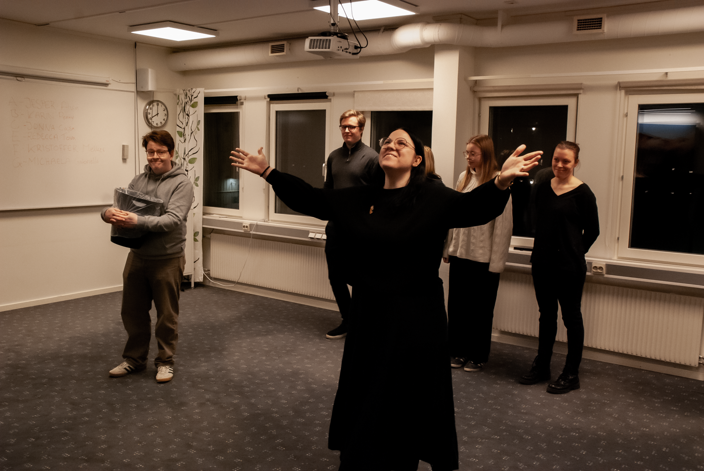

Julteater
Tillsammans skapar vi en julteater där gruppen får arbeta fram en handling under ledning av Jesper Vårö Nilsson. Gruppen arbetar med att först bygga upp en struktur för föreställningen för att sedan improvisera fram repliker och handling. Allt resulterar i en julteater som vi visar upp för publik! Julteaterns namn och mer information om föreställningen samt biljetter kommer snart.

Radioteater
Under våren 2026 kommer vi spela in en radioteater till ett färdigskrivet manus. Det kommer vara en möjlighet för våra medlemmar att lära sig och prova på vad som krävs för att göra en trovärdig värld genom enbart ljud. Berättelsen utspelar sig i ett Norrland fyllt av mystiska väsen och magi. Huvudkaraktären har ärft en gård i en fiktiv by djupt i Norrbottens skogar. Där kommer hon uppleva en hel del mystiga och konstiga ting som kommer bli mycket kul att sätta ljud på. Just nu siktar vi på att ha 12-14 träffar under våren för att kunna spela in all dialog och ljudeffekter. Detta kommer gå som en kurs via Studieförbundet Vuxenskolan samt att information kring denna kurs kommer läggas ut här. Håll utkik – vi hoppas att vi ses där!